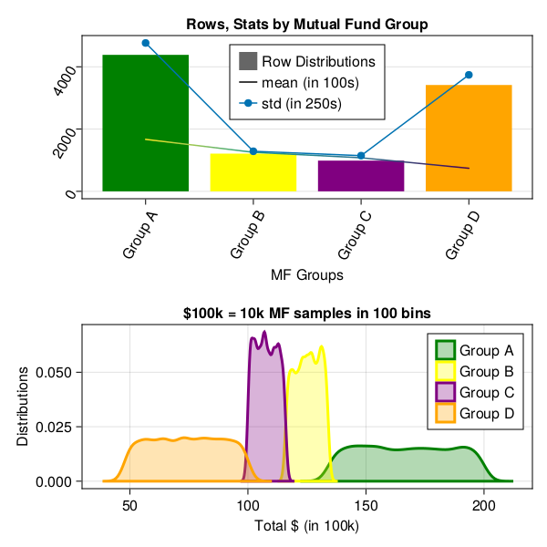

Statistics
In this chapter, we will learn the basics of probability and statistical distributions in context of real world financial data.
- Statistical Distributions
- Mean, Median, Mode, Average, Weighted average, Expected Value
- Variance, Standard Deviation, Mean Square, Entropy Deviation
- variance, standard deviation, mean square, entropy deviation, residual, coefficient, covariance, corelation
- moments, entropy, skewness, kurtosis, entropy
- p value, quantile, quartile
- Discrete Probability Distributions
- Continuous Probability Distributions
- CLT - Central limit Theorem
- sampling
- z-score, alpha, margin of error
- Student's T Distribution
- Degree of Freedom
- T Distribution, T Table
- confidence interval
- chi-squared tests, chi-squared table
- regression, linear, non-linear, generalized, log
Statistical Distributions
what is a distributions anyway
Assigning probability to random variables is Probability distribution. Often Probability distributions is seen similar as Statistical distribution. There is no hard difference anyway. It's more of, how data distributions is assessed.
Statistical distributions help user learn data patterns in terms of discrete or continuous data types. These statistical data pattern helps user assess how an event or data relates to context at a given point of time. Further, it's not possible to analyze all data sets, so sampling statistical data distributions allows users to understand data pattern, while working with samples of data rather than addressing all data which can be very time consuming, tedious and may not be always possible.
Every piece of data is seen as an event. Once probability distributions is assigned to these data variables, that allows users to learn data statistical patterns, which helps user read, understand and rationally predict outcome based on historical events.
how do you explain what a probability statistical distribution?
In simple terms, we use a single value to represent a group of data. This value is called the measure of central tendency and it describes what is typical or average in the data. Common measures of central tendency include the mean, median, and mode.
Probability and distributions aid in comprehending general patterns within data during statistical analysis.
For example, given a set of 100k different Mutual Funds or Stock prices estimated growth is, we want to have a general idea of about how each group of Mutual Fund or stock prices is performing in over all market conditions.
If you are wondering, why we even care of learning probability, statistics, algebra and calculus functions for the sake of Finance Analytics. It's because building AI, is all about using mathematics to find statistical association to rationally predict outcome of an event given a set of inputs, than casual reasoning.
As we progress, we will see, how learning statistical associations and using calculus for automation in small steps, lead to performing statistical tasks, automate predictive analytics, which are fast improved fact based statistical association rather than casual reasoning, and often outperforms human intuitive analytics.
So far, we have seen examples of simple, compound interest certificate deposit types. Now let's dig in deeper and move onto another type of deposit types, i.e. Mutual Funds, stocks, options equity etc.
Before we jump on to more advance Machine learning training, model and predictive analytics, let's spend time on statistical analysis and visualizing probability distributions of data first.
Above analysis is the key to machine learning and predictive analytics. Understanding below statistical concepts lay strong foundations for ML/DL modeling later on.
In this section, we will focus on performing Univariate analysis on Mutual fund data, as you can see in below data sample, that rate type, compound interest type does't impact MF performance, in this dataset, outcome depends on only one variable, "Group Type".
Once we get a hang of analyzing data on one variable, later we will introduce more variables like MF Type, contents, market type etc. Then in later section, we will train our neural network on multiple inputs.
In this example below, we will work on datasets from GeneralLedger.jl package in following steps.
- first draw 1 Million data samples from GeneralLedger.jl package
- groupby data by deposit type
- filter data to include only Mutual Funds
Investment group data example
let's first review this sample example, we will use this data table example, in almost every section of this chapter below.
top 10 rows data samples
using GeneralLedger, CairoMakie, DataFrames, Statistics;
sampleSize = 1000000;
df = GeneralLedger.getSampleDepositsData(sampleSize);
subset!(df, :deposit => x -> contains.(x, "MF"));
dfG = groupby(df, [:rate]);
combine(dfG, nrow, proprow, groupindices,
:Total => mean => :mean, :Total => std => :std);
select!(df, :, :Interest => (x -> round.(x, digits=2)) => :Interest,
:Total => (x -> round.(x, digits=2)) => :Total);
first(df, 10)| deposit | amount | ROI | time | rate | compound | Interest | Total |
|---|---|---|---|---|---|---|---|
| MF-1 | 100000.0 | 0.0 | 60.0 | Group D | 1.0 | -5000.0 | 95000.0 |
| MF-2 | 100000.0 | 0.0 | 60.0 | Group A | 1.0 | 67000.0 | 167000.0 |
| MF-3 | 100000.0 | 0.0 | 60.0 | Group A | 1.0 | 43000.0 | 143000.0 |
| MF-4 | 100000.0 | 0.0 | 60.0 | Group C | 1.0 | 11000.0 | 111000.0 |
| MF-5 | 100000.0 | 0.0 | 60.0 | Group D | 1.0 | -7000.0 | 93000.0 |
| MF-6 | 100000.0 | 0.0 | 60.0 | Group A | 1.0 | 87000.0 | 187000.0 |
| MF-7 | 100000.0 | 0.0 | 60.0 | Group D | 1.0 | -41000.0 | 59000.0 |
| MF-8 | 100000.0 | 0.0 | 60.0 | Group A | 1.0 | 89000.0 | 189000.0 |
| MF-9 | 100000.0 | 0.0 | 60.0 | Group B | 1.0 | 25000.0 | 125000.0 |
| MF-10 | 100000.0 | 0.0 | 60.0 | Group B | 1.0 | 23000.0 | 123000.0 |
data statistics by group
dfA = subset(df, :rate => x -> isequal.(x, "Group A"));
dfC = combine(dfG, nrow, proprow, groupindices,
:Total => mean => :mean, :Total => std => :std);
first(dfC,5)| rate | nrow | proprow | groupindices | mean | std |
|---|---|---|---|---|---|
| Group A | 434547 | 0.43454917274586374 | 1 | 167001.27949335746 | 19035.869873439296 |
| Group D | 342173 | 0.3421747108735544 | 2 | 73983.40897733018 | 15015.364790600419 |
| Group C | 105020 | 0.10502052510262551 | 3 | 108012.07389068749 | 4581.043712478879 |
| Group B | 118255 | 0.11825559127795639 | 4 | 125012.17707496512 | 5172.739927727322 |
- as you can see, above data set is divided in 4 groups and each group has different type of outcomes.
- we will assume, these groups have further characteristics, which lead them to produce outcome in certain ranges.
- for example, Group A invests in certain types of equities which performed better or worse than others.
- however, with in a group, outcome are somewhat consistent (like in certain range).
- abnormal distribution with in one certain group is another topic for detail analysis.
- in later sections, we will only focus on doing analytics at one group level.
- let's visualize groups altogether.
visualizing data
using GeneralLedger, CairoMakie, DataFrames, Statistics;
sampleSize = 10000;
df = GeneralLedger.getSampleDepositsData(sampleSize);
subset!(df, :deposit => x -> contains.(x, "MF"));
sort!(df, [:rate]);
dfG = groupby(df, [:rate]);
dfC = combine(dfG, nrow, proprow, groupindices,
:Total => mean => :mean, :Total => std => :std);
fig = Figure(backgroundcolor=:white, resolution=(600,600),
fonts = (; regular = "CMU Serif"));
axFBP = Axis(fig[1,1], title="Rows, Stats by Mutual Fund Group", xlabel="MF Groups",
xgridvisible=false,
xticklabelrotation=pi/3, yticklabelrotation=pi/3, xticks = (1:4, dfC.rate));
plt = CairoMakie.barplot!(axFBP, dfC.groupindices, dfC.nrow,
stack = dfC.nrow,
color = [:green, :yellow, :purple, :orange],
label = "Row Distributions");
CairoMakie.lines!(axFBP, dfC.groupindices, dfC.mean/100,
stack = convert.(Int64, round.(dfC.mean/100)),
color = convert.(Int64, round.(dfC.mean/100)),
label = "mean (in 100s)");
CairoMakie.scatterlines!(axFBP, dfC.groupindices, dfC.std/4,
label = "std (in 250s)" );
axislegend(position = :ct);
ax = Axis(fig[2,1],
title="\$100k = 10k MF samples in 100 bins", xlabel="Total \$ (in 100k)",
ylabel="Distributions")
density!(ax, subset(df, :rate => x -> isequal.(x, "Group A")).Total./1000,
npoints = 100, color = (:green, 0.3),
strokecolor = :green, strokewidth = 3, strokearound = true, label="Group A")
density!(ax, subset(df, :rate => x -> isequal.(x, "Group B")).Total./1000,
npoints = 100, color = (:yellow, 0.3),
strokecolor = :yellow, strokewidth = 3, strokearound = true, label="Group B")
density!(ax, subset(df, :rate => x -> isequal.(x, "Group C")).Total./1000,
npoints = 100, color = (:purple, 0.3),
strokecolor = :purple, strokewidth = 3, strokearound = true, label="Group C")
density!(ax, subset(df, :rate => x -> isequal.(x, "Group D")).Total./1000,
npoints = 100, color = (:orange, 0.3),
strokecolor = :orange, strokewidth = 3, strokearound = true, label="Group D")
axislegend(position=:rt)
fig
as you can see in above graphs, Group A has largest population and has greatest means as well. Meaning, given 100k investment, overall ROI can be anywhere between 120-180k. Standard deviation in results are very high as range 120-180 on 100k original amount is very wide.
Similarly, Group B, Group C follow Group A in ROI. Group D has second largest population but is worse performing, and most of the time, ROI is less then 100k, which is under performing and losing investment anywhere from 40-50k.
before we start learning about different distributions, let's learn about some statistical properties to measure data tendencies.
Mean, Median, Mode, Average, Weighted average, Expected Value
Mean, Average
The mean (also known as average), is obtained by dividing the sum of observed values by the number of observations.
for example
\[x = [1,2,3,4,5] \\ mean(x) = average(x) = \frac{sum of values of observations}{number of observations} \\ mean(x) = average(x) = \frac{1+2+3+4+5}{5} \\ mean(x) = average(x) = \frac{15}{5} \\ mean(x) = average(x) = 3\]
Median
The median is the middle value of a set of data containing an odd number of values, or the average of the two middle values of a set of data with an even number of values. The median is especially helpful when separating data into two equal sized bins. The excel syntax to find the median is MEDIAN.
for example
\[x = [1,2,3,4,5] \\ median(x) =3 \\ \\ x = [1,2,3,4,5,6] \\ median(x) = \frac{3+4}{2} \\ median(x) = 3.5 \\\]
Mode
The mode of a set of data is the value which occurs most frequently.
\[x = [1,2,2,4,5,5] \\ mode(x) = [2,5]\]
Weighted average
A weighted average is the average of a data set that recognizes certain numbers as more important than others.
for example
\[ROI(\_percent) = [0.3,3.3,4.3,5.6] \\ StocksQty = [1000, 1200, 900, 1000] \\ average(x) = \frac{0.3 +3.3 +4.3 +5.6}{4} \\ average(x) = \frac{13.5}{4} \\ average(x)(\_percent) = 3.75 \\ \\ weightedAverage(x) = \frac{\frac{0.3*1000}{100}+\frac{3.3*1200}{100}+\frac{4.3*800}{100}+\frac{5.6*1000}{100} }{1000+1200+1500+900+1000} \\ weightedAverage(x) = \frac{0.3*10 +3.3*12 +4.3*9 +5.6*10 }{5600} \\ weightedAverage(x) = \frac{30+39.6+37.8+56 }{5600} \\ weightedAverage(x) = 0.029 \\ weightedAverage(x)\_percent = 2.9 \\ average(x)(\_percent) = 3.75\]
Expected Value
Expected value is exactly what it sounds like, return you can expect for some kind of action. Formula to calculate basic expected value, is the probability of an event multiplied by the amount of times the event happens. $(P(X==x) * n)$.
for example given $ROI(%) = [0.3,3.3,4.3,5.6]$, what is the Expected value of USD 1000 investment?
| Amount | ROI | Probability | X*P(X) |
|---|---|---|---|
| 1000 | 1000(1+0.3/100) | 0.25 | 250.75 |
| 1000 | 1000(1+3.3/100) | 0.25 | 258.25 |
| 1000 | 1000(1+4.3/100) | 0.25 | 260.75 |
| 1000 | 1000(1+5.6/100) | 0.25 | 264.00 |
| –- | –- | –- | –- |
| –- | –- | EV | 1033.75 |
Variance, Standard Deviation, Mean Square, Entropy Deviation
Discrete Probability Distributions
Bernoulli Distributions
Binomial Distributions
Continuous Probability Distributions
Normal Gaussian Distributions
Poisson Distributions
Exponential Distributions
Geometric Distributions
Negative Binomial Distributions
Multinomial Distributions
variance, standard deviation, mean square, entropy deviation, residual, coefficient, covariance, corelation
moments, entropy, skewness, kurtosis, entropy
p value, quantile, quartile
notes
regression is another blog with optimization
linear regression, what is linear regression, GLM etc. refer to statistics data science math topics
CLT - Central limit Theorem
`as per wikipedia' In probability theory, the central limit theorem (CLT) establishes that, in many situations, when independent random variables are summed up, their properly normalized sum tends toward a normal distribution even if the original variables themselves are not normally distributed.
The theorem is a key concept in probability theory because it implies that probabilistic and statistical methods that work for normal distributions can be applicable to many problems involving other types of distributions.